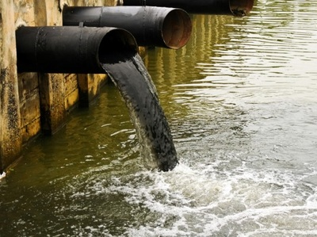
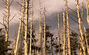

These are some of the disadvantages of not caring the Environment as we should.
1.Pollution(for example:Water pollution, soil pollution, air pollution)

2.It spreads different kinds of diseases in society.
3.Flood:A flood is an overflow of water that submerges land which is usually dry. Here are some pictures of flood.
4.Drought:A drought is a prolonged period of abnormally low rainfall, leading to a shortage of water.
5.It may lead to acid rain and smog.
